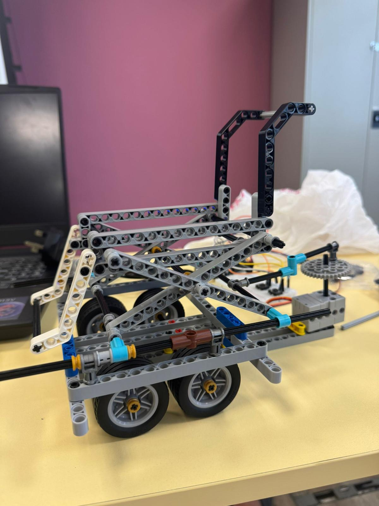

2025 – 2028 (expected)
Nanyang Polytechnic
Diploma in Electronic and Computer Engineering (C89). GPA 3.97 / 4.00. Director's List in Year 1 Semester 1, Year 1 Semester 2 and Year 2 Semester 1.
I take prototypes from a bag of sensors to a working device: wiring, firmware, the power bugs nobody warns you about, and a write-up good enough for someone else to rebuild it.
Singapore imports around 90% of its food, and community garden plots often fail for a simple reason: uneven watering. This node reads soil moisture, air conditions and tank level, then releases water through a servo-pinched tube only when the soil has stayed dry across five readings in a row.
It skips a cycle when the tank is under 20% or the air is above 90% humidity, waits through a cooldown before it can water again, and serves a live dashboard over WiFi from the Fire itself.

Prototype demo: dry reading opens the valve, wet keeps it shut
A tilt alarm for anything that has to stay level. The Fire's IMU measures how far the device has tilted from a level position you set with one button. Past the limit, the screen and LED bars turn red, the speaker beeps, and a push notification goes to your phone. Straighten it and everything goes back to green.
The Fire also serves its own dashboard over WiFi, where you can watch the angle live, mute the beeper, change the limit and reset the level position. The screen rotates itself to however the device is mounted.

Main demo

Limit test, plus mute, set limit and re-zero from the website
Air-conditioning is one of the largest loads in Singapore buildings, and an open window lets the cooled air walk out. This system acts as a smart timer for the window: you get a grace period for ventilation, then a red LED and buzzer go off if it's still open.
The Arduino reads an IR reflective sensor for window state and a rotary knob that sets the grace period from 5 to 60 seconds. It streams both to a Raspberry Pi over USB serial. The Pi runs the timing logic, sends the alarm command back, logs every event to MariaDB and shows live status and history on a Flask dashboard.

Prototype demo
Wheelchair users often can't reach items on high supermarket shelves without asking for help, and reaching up from a low seat strains the shoulders, neck and back. We compared four ideas on a value-effort map and built the one that gave users the most independence: a wheelchair whose seat rises at the press of a button.
A servo turns a Lego gear that drives a scissor lift under the seat, with one button for up and one for down. Because users can't easily see behind them once raised, a rear-facing ultrasonic sensor turns on an LED and beeps a buzzer when anything comes within 25 cm.
Button control
Scissor lift
Seat rising

Built at GovTech's Digital4Good hackathon for the "Report Inappropriate Content" problem statement. A browser prototype that helps youths spot online harm: it scores messages across 11 categories with rules plus a Naive Bayes model, blurs risky ones behind a salted SHA-256 password, and builds an evidence file for escalation.
Seven labs of bare-metal C: GPIO, ADC, UART serial and external interrupts (INT0/INT1 with ISRs), written with direct hex register values and no blocking delays. Ends with a temperature monitor that drives a fan.
A command-line ordering app with category menus, a cart you can edit, student, staff and member discounts, 9% GST, a lucky-draw game at checkout and input validation throughout.
A bot that watches my Pokémon card collection on Collectr. Every morning it messages me on Telegram with the 3 cards that rose the most and the 3 that fell the most; every Sunday it sends how much the whole portfolio moved that week. It reads the public showcase page, keeps a daily snapshot history and runs on a macOS schedule, using only the Python standard library.
Diploma in Electronic and Computer Engineering (C89). GPA 3.97 / 4.00. Director's List in Year 1 Semester 1, Year 1 Semester 2 and Year 2 Semester 1.
Microcontroller Systems · Electronic Communication System Analysis · Smart Connected System Project for Sustainability · Statistical Analysis for Computing
Selected for SYLP and completed the NYC Youth Leaders' Course (NYCLC).
Represented Nanyang Polytechnic.
Built SafeLens AI with a team of three.
Languages: English, Chinese.